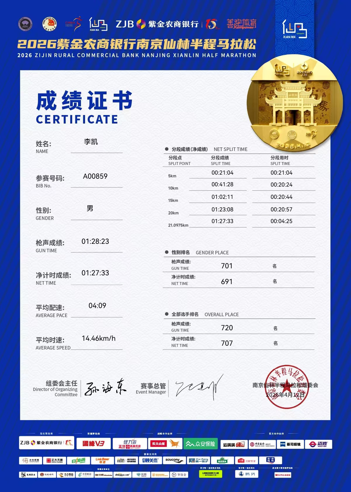
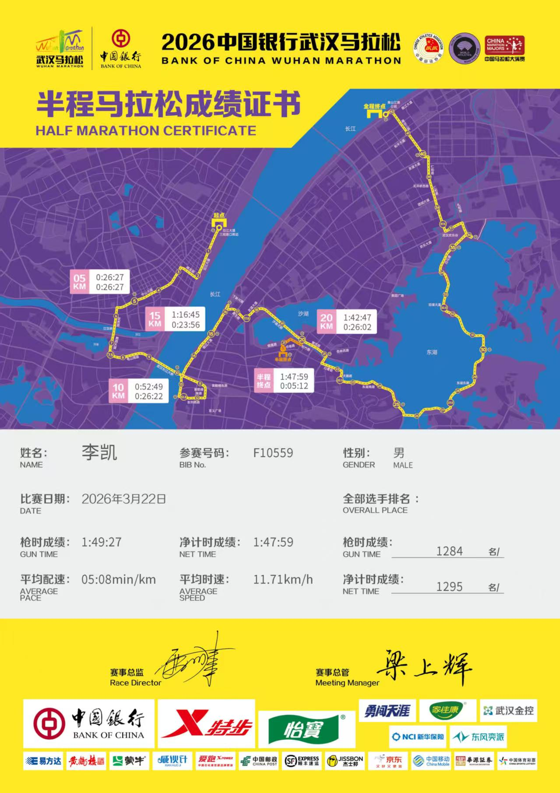
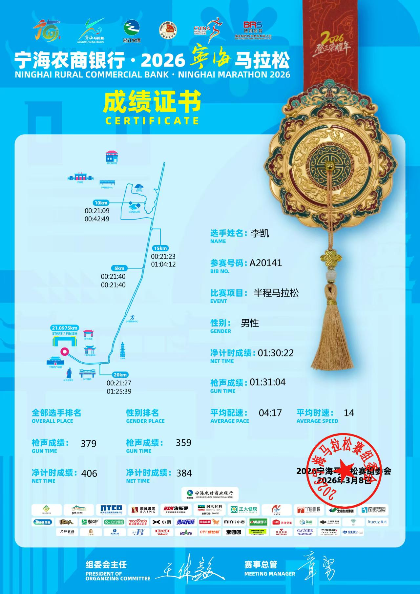
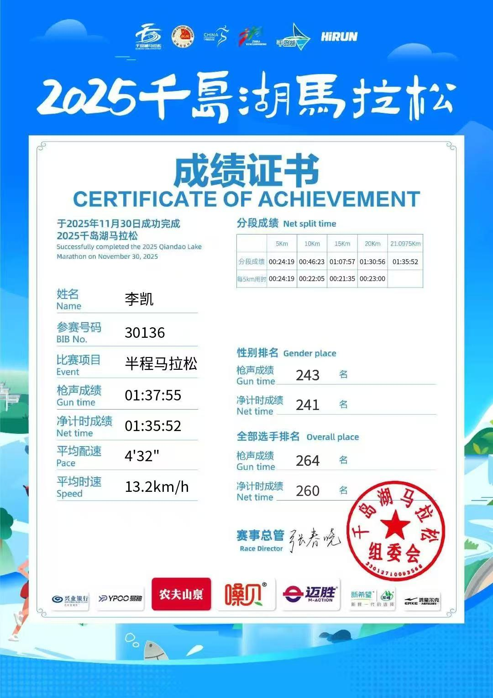
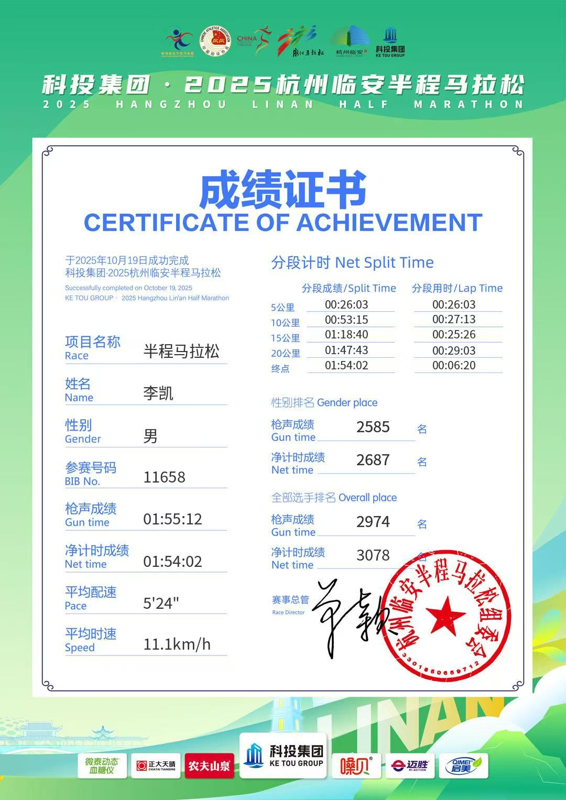
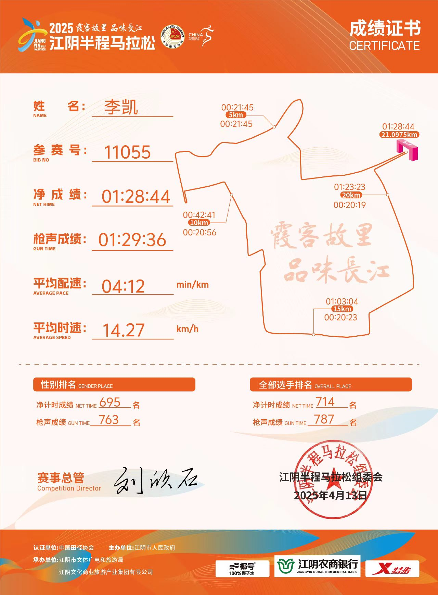
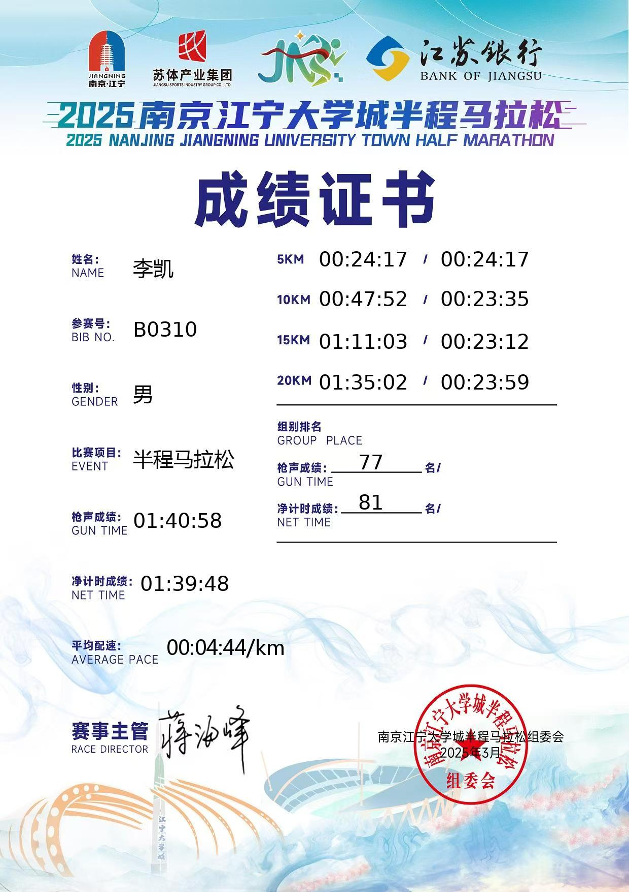
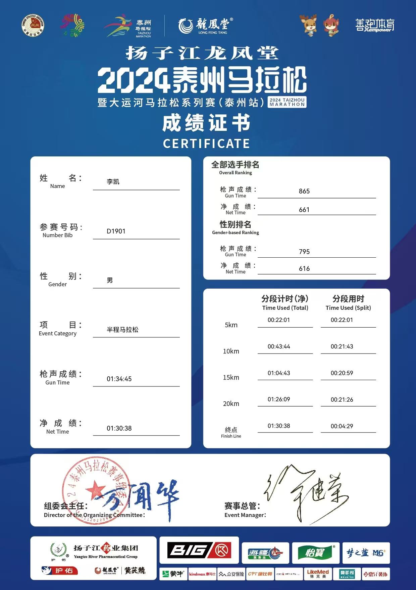

2026.04.12
南京仙林半程马拉松
半程马拉松

参赛感想
雨中奔跑，赛道虽有缓坡但体感很棒！最近事务繁忙，一个多月来每周仅能跑一次，能跑出1:27的成绩已相当满意。
每一步都是对自我的挑战，每一场比赛都是一次成长

雨中奔跑，赛道虽有缓坡但体感很棒！最近事务繁忙，一个多月来每周仅能跑一次，能跑出1:27的成绩已相当满意。

赛前一周因打游戏不慎腰伤，只能压着速度跑。途中恍惚间似见故人，却不敢相认。汉马的氛围真的绝了，志愿者热情似火，整座城市都为奔跑而沸腾。

赛道平坦舒适，本想赛后去看海，奈何体力不支未能成行。当地的面食口味实在不敢恭维。寒假几乎没系统训练，能跑出1:30的成绩已是惊喜。

湖光山色，美不胜收，真有种想在此养老的冲动！但赛道难度远超预期，连绵陡坡令人崩溃，后半程完全掉速。

赛前一天畅游青山湖，景色宜人。赛道平坦，与陈子毅结伴而行。无奈足底筋膜炎作祟，只能前脚掌踮地跑，脚趾胀痛如血管欲裂，一路跑跑停停。神奇的是，冲过终点后伤痛竟似痊愈。

赛前大腿受伤，整整一个月未系统训练。如果不是赛道实际距离比标准多出300-400米，就到1:27了。但最终还是大包小包拎回家，已心满意足。

伤后恢复的首场比赛，赛前未在当地留宿，清晨打车奔赴赛场，行程略显仓促。

人生首场半马！赛道整体平坦，仅两座桥梁略有起伏。最后6公里堪称炼狱，咬牙坚持才得以完赛。